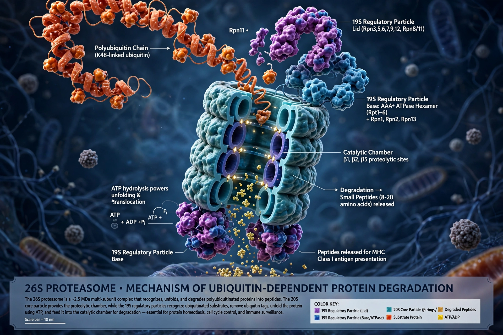

Proteasomes are protein complexes which degrade unneeded or damaged proteins by proteolysis, a chemical reaction that breaks peptide bonds. They are found in all eukaryotes and archaea, and in some bacteria, forming a major mechanism by which cells regulate protein concentration and remove misfolded proteins.
The 26S proteasome consists of a cylindrical 20S core particle — four stacked rings of alpha and beta subunits, the inner beta subunits carrying protease active sites — capped by one or two 19S regulatory particles that recognise polyubiquitin chains, unfold substrates using ATPases, and feed them into the core.
Proteins are tagged for destruction by the small protein ubiquitin, work recognised by the 2004 Nobel Prize in Chemistry to Ciechanover, Hershko and Rose. The proteasome chops substrates into peptides of about 7–9 amino acids. It also generates peptides presented by MHC class I molecules. Proteasome inhibitors such as bortezomib are used to treat multiple myeloma.